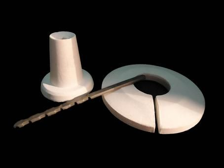

Hornos y calderas
Refractarios Naucalpan ofrece a la industria de pisos, azulejos, cerámica decorativa, losetas cerámicas y acabados, productos que van desde placas cerámicas hasta soportes refractarios. Para los fabricantes de hornos industriales para altas temperaturas, calderas e incineradores, poseemos una línea completa de productos como placas, aislamientos y piezas especiales como los bloques quemadores.
